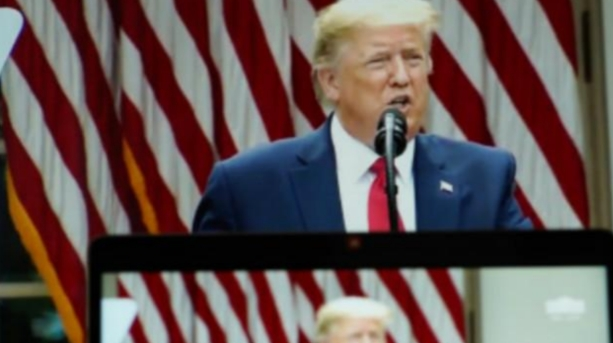
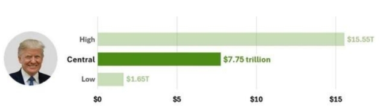
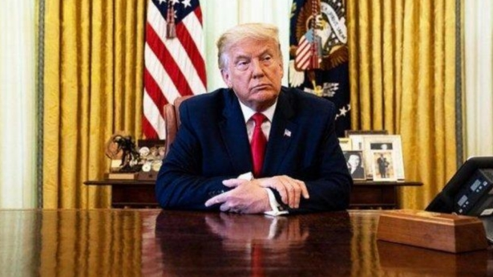

12月20日|来源:一财网

陈跃武对记者解释道 ，随着美联储开启降息周期，房贷利率已经进入下降通道。 美国房产库存量仍远低于6个月平衡点 ，平均房价继续屡创新高。
根据近期发布的最新标普凯斯-席勒指数 ，8月美国平均房价同比增长4.2% ，再创历史新高 。其中房价同 比增幅最高的3个城市是纽约 、拉斯维加斯和芝加哥， 同时该指数覆盖的所有20个城市的房价都在上涨。
美国金鹰房产投资公司执行合伙人陈跃武对第一财经记者表示 ，美国各大权威机构对美国住房的短缺都给出了估算 ，其中房利美和房地美的估算都在400万套左右 。美国房产市场供不应求，是房价持续上涨的根本原因。
同时 ，陈跃武对记者解释道 ，随着美联储开启降息周期，房贷利率已经进入下降通道 。这对美国房产市场 是重大利好。
此前 ，美国当选总统特朗普曾在2024年美国总统选举中多次提出了他将敦促美联储大幅下调利率 ，并希望通过促进新房建设来解决美国的住房负担问题。
不过，有分析指出，其在关税以及将大批遣返非法移民等设想 ，也可能加重美国通胀和房屋建设难题 。特朗普当选 ，究竟将如何影响美国楼市?
标普凯斯-席勒指数显示，8月纽约房价同比增幅最高，为8. 1%，其后为拉斯维加斯( 7.3%) 和芝加哥7.2%。
其余主要城市为底特律6.0%、洛杉矶5.9%、圣地亚哥5.7%、波士顿5.5%、西雅图5.2%、迈阿密5. 1%、亚特兰大3.7%、凤凰城2. 1%、旧金山2.8%、坦帕1 .7%、达拉斯1 .6%和丹佛0.7%。
陈跃武对记者解释，最近1年里，美国东北部房价增长最快，主要原因是在过去几年里 东北部房价，增长幅度远远落后于其他地区，现在在补涨。
“而反过来 ，美国南部的达拉斯 、坦帕 、凤凰城等城市目前房价增长较慢 ，主要原因是在过去几年里 ，这些城市房价增长幅度遥遥领先于其他地区，现在暂时放慢步伐喘息一下 。”他表示。
同时 ，“ 目前美国的房产库存量是3至4个月的销售量 ，远低于6个月的平衡点 。”他解释道 ，美联储主席鲍威尔则在3月初的国会质询中承认美国住宅房产供给严重不足。
他提醒道， 目前需要注意的是，房价上涨恐将再次加速。
“美联储在今年9月大幅降息0.5个百分点，正式开启降息周期 。11月7日美联储再次降息0.25个百分点。”
最近的数据显示美国的通货膨胀率已经降到2.4%，基本达到美联储的目标。劳工市场也在迅速降温。” 陈跃武表示，目前市场预期美联储会在2025年继续降息约1个百分点 ，最终利率降到3.75%至4%。
“ 随着美联储开启降息周期，房贷利率已经进入下降通道。在9月中旬美国房贷利率从7%大幅下降至6.1% 左右。目前有所反弹，回到6.79%，但下降的趋势是不变的。”他对记者表示 ，“我们预测在2025年美国房贷利率将降到5%至6%的区间。这对美国房产市场是重大利好 。随着房贷利率持续下降 。对房产的需求将大幅释放 ，我们并预测房价上涨将再次加速，增长幅度在未来将重新回到10%以上。”
特朗普曾表示在当选后要敦促美联储加速降息。
此前，同特朗普相识并支持特朗普竞选的美国房地产大亨 、卡东资本公司(Cardone Capital) 首席执行官 格卡东(Grant Cardone)表示，他相信特朗普重返白宫将导致美联储大幅降息。
他表示 ，美国存在一个巨大的房地产问题，他(特朗普)知道这一点 ，唯一缓解这一问题的办法就是向美联储施加巨大压力，迫使其降息，而 “我相信他会做到这一点 ，我相信我们会在未来12个月内实现降息 ，而且是历史性降息”。
卡东认为，目前，接近7%的美国房贷利率必须降至4%或更低。
鲍威尔多次表态称 ，美联储要保持相对于行政部门的独立 。在特朗普胜选后，鲍威尔在记者会上表示， 如果特朗普要求他辞职，他将回绝， 因为美国法律不允许总统罢免美联储主席。
上海交通大学上海高级金融学院教授 、美联储前高级经济学家胡捷对第一财经记者表示 ，美国已进入美元利率下行周期。
同时，尽管鲍威尔不会连任 ，且美国总统有权在美联储主席任期结束时提名新候选人，但胡捷表示: “鲍威尔的任期到2026年才届满， 因此 ，美国新总统上任后不会立即影响美联储的领导层”。
曾在亚特兰大的美国联邦储备银行工作多年的胡捷说 ，“ 除美联储主席之外 ，美联储的七位理事每两年更替一人，每次更替均需总统提名 、参议院批准。此外，12个地方联储银行的运作完全独立于总统的管辖范围之外 ，行政当局对金融政策的直接干预能力相当有限 。”
不过 ，需要注意的是 ，一方面特朗普多次表态希望让美联储加速降息 ，一方面特朗普的大幅减税并大幅提高关税的设想，有可能刺激通胀。
“ 除非美国出现通胀 、国内生产总值(GDP)增长或失业率等数据显著意外波动 ，美联储应会按照既定节奏 稳步下调利率 。即若没有数据上的异常 ，美联储将继续每次会议下调25个基点 ，逐步降低利率 。”胡捷对 记者解释道 ，“如果出现意外，例如通胀反弹 ，美联储可能会暂时观望;若失业率急剧上升，则可能加快降息步伐 。”
陈跃武也对记者解释道，目前市场上的看法是，伴随特朗普胜选 ，华尔街投资者开始押注通胀上升和降息减少。
他表示，从今年年初开始，由于美国经济数据放缓 ，投资者预期美联储将持续降息 ，美国30年期抵押贷 款利率从今年春季的超过7%稳步下降到9月份的6. 1% 。但由于上述原因已出现反复，在过去一个月内大幅反弹至6.79% 。“我个人认为这是暂时的，房贷利率下降的大趋势并没有变化 ，只是下降速度可能比原 来预想的慢一些 。”他说。
同时 ，特朗普的其他一些设想恐怕也将干扰房地产市场 。譬如 ，特朗普誓言将大批遣返非法移民。
陈跃武表示，有媒体计算称， 由于建筑业劳动力有约三分之一来自非法移民 ，这可能造成大量劳动力流失 导致建筑业劳动力短缺 。随着工人减少 ，工资可能会上涨 ，这很可能会通过房价上涨转嫁给购房者。
同时 ，特朗普誓言将大幅提高关税 ，这可能会推高住房成本。他表示: “有专家表示，对木材等建筑原材料 征收10%至20%的关税可能会推高住房成本以及房屋装修材料的成本 ，而任何提高产品成本的关税都将直 接影响到消费者 。”
陈跃武表示，目前的一种看法是，从短期来看，特朗普重返白宫后 ，情况基本上不会发生太大变化 。由于供应仍然紧张，房价可能会继续上涨 ，而抵押贷款利率的波动预计将使买家和卖家都保持谨慎。
“从长远来看，情况可能会变得更好，也可能会变得更糟--这取决于特朗普入主白宫后决定优先考虑什么。”他表示。
12月25日|来源:央视新闻客户端

当地时间25日，美国当选总统特朗普表示，将对墨西哥和加拿大进入美国的所有产品征收25%关税。此外，特朗普还妄言将对进口自中国的所有商品加征10%的关税。
这也并非特朗普首次发表有关就任美国总统后挥舞“关税大棒”的言论。早在今年7月，当时还在竞选美国总统的特朗普就被美媒曝出要出台一揽子关税计划。其中对进口自中国的商品征收关税的税额可达60%。在今年9月，特朗普在佐治亚州的一场竞选集会上更是扬言，要对每辆从墨西哥进口至美国的汽车征收100%的关税。
不过特朗普为一时胜选作出的许诺，却需要让美国民众承受长久的代价。
根据我国商务部国际贸易谈判代表兼副部长王受文在今年11月22日回答有关“特朗普计划对中国征收60%关税”相关问题时的表态，高关税的成本与后果终将由进口国的消费者和最终用户来支付。
王受文表示，历史已经表明，一个国家对中国加征关税并没有解决这个国家自身所存在的贸易逆差问题，相反，它推高了这个国家从中国以及从其他国家进口产品的价格。因为最终关税是由进口国的消费者和最终用户来支付，它必然导致了消费者支付价格的上升，用户成本在提高，物价上涨导致了通货膨胀。
甚至连美国人自己也对肆意增加关税必然招致的后果谙熟于心。在今年8月16日，当时已经确定将作为民主党总统候选人与特朗普同台竞技的哈里斯，在一次竞选集会上批评特朗普的关税政策。她表示，特朗普提议征收的进口关税相当于对美国从别国进口的日常用品征收“特朗普税”，将加重美国人生活负担，“摧毁美国人”。
按哈里斯的说法，“特朗普税”包括“特朗普汽油税、特朗普食品税、特朗普服装税和特朗普非处方药税”。哈里斯称，经济学家估计，特朗普的计划将导致一个美国普通家庭每年多出3900美元的开销。
拜登-哈里斯政府执政期间，美国民众饱受高物价、高通胀折磨。有分析人士指出，哈里斯试图通过批评特朗普的关税政策来获得民众支持。
不过政客们为胜选的相互攻讦最终也都沦为闹剧。在后续的回应中，特朗普将美国近几年物价飞涨的责任归咎于哈里斯。他说，哈里斯担任副总统期间，向普通美国人征收了“卡玛拉·哈里斯通胀税”。
一项重要的经济议题，在两党总统候选人的相互攻击下，仅作为一项政治武器。至于其后果，也只有美国民众自己冷暖自知了。
但就通胀问题，近年来已有多个研究机构发布研报，指向了一个共同的结论:美国消费者因高通胀、高物价水平而降低消费水平。如果在添上一份“特朗普税”，美国民众本就低迷的消费水平将更加雪上加霜。
全美零售联合会指出，特朗普的关税计划可能将令美国消费者的年度消费能力损失多达780亿美元。
全美零售联合会供应链和海关政策副总裁乔纳森·戈尔德表示，零售商依赖进口商品和制造组件，以便提供多样化且价格合理的商品，如果实施这些进口关税，将使低收入家庭的经济负担更加沉重，因为关税最终会转嫁给消费者，导致物价上涨。
就在特朗普11月25日宣布将对墨西哥、加拿大和中国商品增加关税前不久，美国财政部记录下的美债总额突破了36万亿美元。按照高盛首席经济学家扬·哈齐乌斯今年7月的一份分析，如果特朗普的关税计划得以施行，可能引发美国通胀上升，从而促使美联储进一步加息，利率预计将累计上升130个基点，此外大概率还将招致贸易战，从而损害美股和美债。
美联储在好不容易结束了一段加息周期进入降息周期后，若再因增加关税招致的通胀而再次开启加息周期，将进一步提高美国的偿债成本。根据美国财政部11月20日公布的数据，2024年美国联邦政府仅用以偿还美债利息的支出就达到了8820亿美元。相较2023年6590亿美元的利息支出，2024年美债利息支出增长率达33.8%。
更有预算分析师给出了精确数字，特朗普包含关税政策在内的一系列经济计划将导致到2035年美国联邦政府债务增加7.75万亿美元。
至于特朗普为推行高关税政策而常常挂在嘴边的，要让这些国家“付出代价”，恐怕最后到头来还是需要美国民众自己负担。
一边是买不起的高价商品，一边是持续堆高无力偿付的债务，即将上任美国总统的特朗普，真的想好了吗?
12月20日|来源：第一财经

对此，特斯拉创始人马斯克回应道：“这太棒了。”
特朗普2.0时代即将到来，在美投资时的监管障碍能否减少，投资审批速度能否加速？
当地时间12月10日，美国当选总统特朗普表示，要加快对在美国投资10亿美元以上投资者的监管审批。
“任何在美国投资10亿美元或更多的个人或公司，都将获得全面加速的审批和许可，这包括但不限于所有对环境的审批。”特朗普在社交媒体平台上写道。
对此，特斯拉CEO马斯克回应道：“这太棒了。”
彭博行业研究（Bloomberg Intelligence）在其《2025年全球展望》报告中称，特朗普政府的政策可能会促使美国的经济增⻓和通货膨胀率略有上升。这部分源于⼤选不确定性的消散，还有⼀部分来自于企业认为监管会更加放宽。
“我们预计对未来的这⼀乐观预期——⽤凯恩斯的话说就是‘动物精神’——将在2025年上半年推动企业投资。”该报告称。
是噱头，还是推动许可改革？
针对上述计划，特朗普没有提供更多细节，也没有说明将授予哪些监管审批快速通道的权利，或者这些法规将如何适用于10亿美元的投资门槛。
目前尚不明确特朗普将如何在正式就任后推进这一提议，不过此举反映出特朗普方面计划通过放松监管来刺激更多国内投资，而非采用税收抵免和补贴方式对投资进行刺激的倾向。
特朗普在上一个总统任期内就曾抱怨，美国一些最关键的基础设施项目“被缓慢得令人发指、负担沉重的联邦审批程序所束缚和拖累”。
特朗普的高级顾问米勒（Jason Miller）在10日的一场活动上表示，特朗普未来这一任期将是“削减监管的黄金时代”。
米勒称，“如果你想引进资金，他会想方设法让这些资金进入美国，并投资于美国。”
他解释道，上述计划既适用于来自于美国国内的投资，也适用于国外投资，“他想拿到钱，削减法规，让经济重新运转起来。”
美国环保组织对特朗普此举表示质疑。美国自然资源保护委员会首席政策倡导官亚当斯（Alexandra Adams）说，特朗普应该小心自己的愿望， “如果有人想在海湖庄园旁边建一个垃圾焚烧炉，或者在贝德明斯特（Bedminster）高尔夫球场旁边建一个煤矿呢？”
“美国国会要求政府认真审视对社区的影响，以确保我们不会为弊大于利的项目开绿灯，这是有原因的。”她补充道。
华盛顿能源研究公司ClearView Energy Partners能源分析师布克（Kevin Book）表示，特朗普的发言显示了他一贯的表演天赋，但这背后有一个真正的问题：美国国会中的两党正在推动许可改革，以加快现在需要数年才能获得批准的重大环保项目，“这里的实质是，他在认真努力完成许可改革。”
“许可延误是包括能源在内的许多行业的障碍，有数十亿美元的投资正在等待许可改革。”他补充道。
降低环评标准推动油气发展？
此次，特朗普在发言中着重提到了对“环境审批”的放松。此前在竞选中，特朗普数次表示，要削减旨在遏制石油行业排放的法规，以促进更多的钻井活动。
需要提到的是，特朗普提名泽尔丁（Lee Zeldin）为下一任环境保护署（EPA）署长。
EPA向来是民主党执行应对气候变化和环保政策的“重镇”。泽尔丁曾担任纽约州众议院议员，是特朗普的忠实拥护者，他本身支持在环保规例方面为商界松绑。
在特朗普宣布任命决定后，泽尔丁发表声明表示，将“恢复美国的能源主导地位，振兴汽车工业，将工作机会带回美国，并使美国成为全球人工智能（AI）领导者。”、
他也表示，在做到上述成绩的同时，也要保证对于清洁空气和水的获取。
同时，特朗普还提名北达科他州州长伯格姆（Doug Burgum）领导内政部以及新成立的国家能源委员会，并提名油田服务公司Liberty Energy首席执行官赖特（Chris Wright）领导能源部。
伯格姆来自能源丰富的州，而赖特则是石油大亨，这凸显了即将上任的特朗普政府对加强美国国内能源生产的重视。
其中，许可改革是石油和天然气行业关注的焦点，多年的法律和监管拖延阻碍了新管道的建设。
实际上，同样的问题现在也是美国发电商和科技公司最关心的问题，因为AI相关数据容量的增长预计将在未来几年迅速增加美国的电力需求，这就需要对新的发电和输电基础设施进行重大投资。
目前，各界预计特朗普政府在上台后，极有可能撤销拜登任内颁布的一系列限制化石燃料生产和消费的法规。
上海交通大学上海高级金融学院教授胡捷对第一财经记者表示，从特朗普作为共和党的理念，以及其本人的商人气质来看，他对于监管的态度相对是比较松的。
他解释道，在能源方面，如特朗普上台，对于传统能源的政策会有一个非常明显的调整。
“美国是一个油气储量非常丰富的国家，在拜登政府上台以后，基本上把这类生产给抑制住了。”他解释道，譬如从加拿大方面建设输气管道等一些非常重要的能源设施都停建了。
“特朗普对于新能源的看法没有那么激进，对传统能源的话会放行。”胡捷解释道，这会带来一些明显影响，譬如油价会下跌。